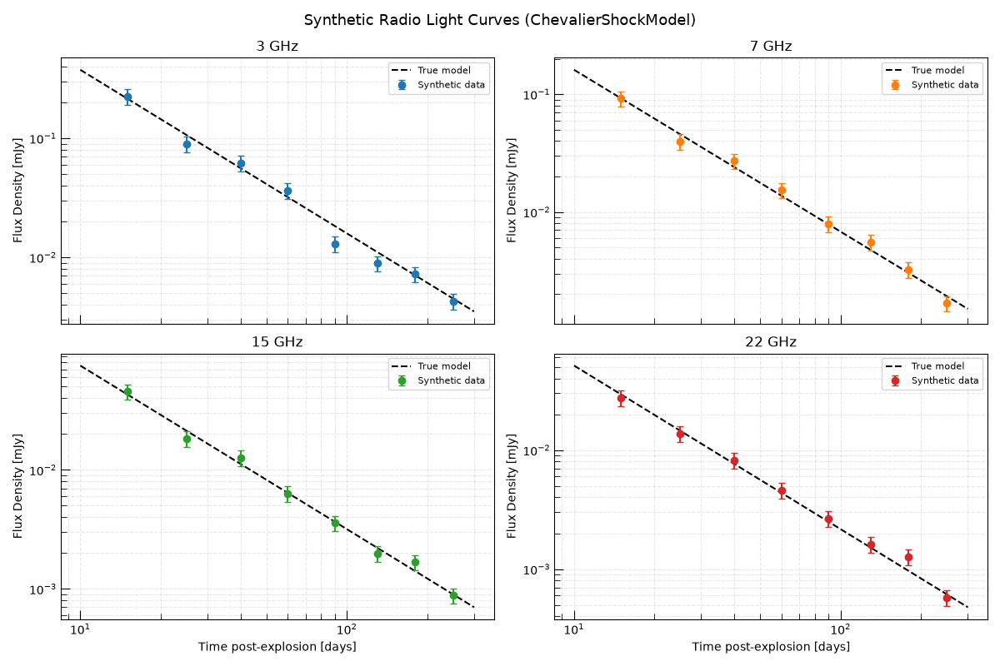
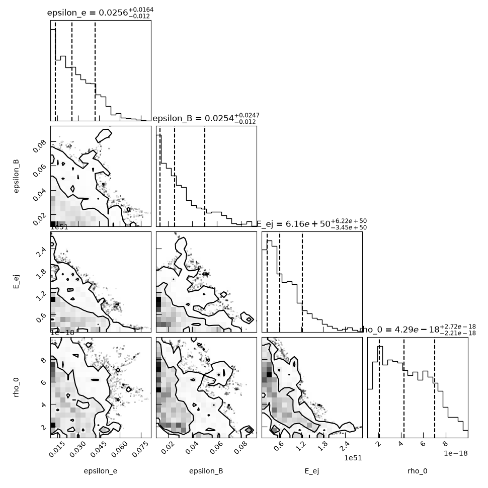
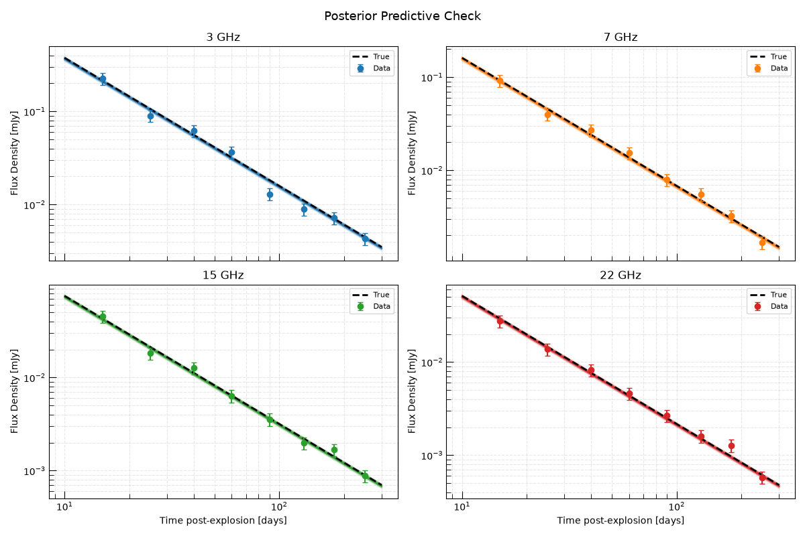

Note
Go to the end to download the full example code.
Inferring Physical Shock Parameters from a Radio Supernova#
This example demonstrates the full science-grade inference workflow for recovering the astrophysical parameters of a radio supernova from multi-frequency radio observations.
The goal is to directly infer the progenitor’s mass-loss history and the supernova’s explosion energy from radio data — parameters that probe the progenitor star decades before the explosion.
The Physical Model#
We use ChevalierShockModel, which
implements the Chevalier (1982) self-similar solution for a supernova shock
expanding into a wind-stratified CSM. The model computes the synchrotron flux
density at a given frequency and time directly from six physical parameters:
Explosion / ejecta parameters:
\(E_{\rm ej}\) — total kinetic energy of the ejecta [erg]
\(M_{\rm ej}\) — ejecta mass [\(M_\odot\)]
\(n\) — outer ejecta density power-law index
CSM parameters (encoding the progenitor wind):
\(\dot{M}\) — progenitor mass-loss rate [\(M_\odot/{\rm yr}\)]
\(v_{\rm w}\) — progenitor wind speed [km/s] (together these give the wind density \(\rho_w \propto \dot{M}/v_w r^{-2}\))
Microphysical parameters:
\(\epsilon_e\) — electron energy fraction
\(\epsilon_B\) — magnetic energy fraction
\(p\) — electron energy distribution power-law index
For this example we fix \(n = 10\) (canonical for Type Ibc supernovae), \(M_{\rm ej} = 2 M_\odot\), and \(p = 3\), and infer the remaining four parameters.
Overview#
Simulate synthetic multi-frequency radio light curves using known true parameter values.
Set up an InferenceProblem with physically motivated priors.
Run MCMC to sample the posterior.
Analyze the results — corner plot, posterior predictive check, and physical interpretation.
Relevant API#
ChevalierShockModelInferenceProblemEmceeSampler
Setup#
import matplotlib.pyplot as plt
import numpy as np
from astropy import units as u
from trilobite.models.supernovae.chevalier_shock import ChevalierShockModel
from trilobite.utils.plot_utils import set_plot_style
set_plot_style()
rng = np.random.default_rng(42)
Define True Parameters and Generate Synthetic Observations#
We simulate observations of a radio-bright Type Ibc supernova at 10 Mpc. The true parameters are chosen to represent a moderate mass-loss rate progenitor, similar to observed events like SN 2011dh or SN 2002ap.
We observe at 4 frequencies spanning VLA bands (3, 7, 15, 22 GHz) and 8 epochs from 10 to 200 days post-explosion.
shock_model = ChevalierShockModel()
# ------ True physical parameters ------
true_params = {
"E_ej": 1.0e51 * u.erg, # Kinetic energy
"M_ej": 2.0 * u.Msun, # Ejecta mass (fixed in inference)
"n": 10.0, # Outer ejecta index (fixed)
"s": 2.0, # CSM power-law index (wind; fixed)
"rho_0": 5e-19 * u.g / u.cm**3, # CSM density at 1e14 cm
"delta": 0.0, # Inner ejecta index (fixed)
"epsilon_e": 0.1, # Electron energy fraction
"epsilon_B": 0.1, # Magnetic energy fraction
"p": 3.0, # Electron index (fixed)
"gamma_min": 1.0,
"gamma_max": 1e7,
"f": 0.5,
"theta": np.pi / 2,
"smoothing_s": -0.5,
"D": 10.0, # Distance in Mpc
}
# Observing setup
frequencies = u.Quantity([3.0, 7.0, 15.0, 22.0], u.GHz)
epochs = u.Quantity([15.0, 25.0, 40.0, 60.0, 90.0, 130.0, 180.0, 250.0], u.day)
noise_frac = 0.15
# Generate synthetic light curves
syn_data = {}
for freq in frequencies:
fluxes_t = []
for t in epochs:
variables = {"frequency": freq.to(u.Hz), "time": t.to(u.s)}
flux = shock_model.forward_model(variables, true_params).flux_density.to(u.mJy)
noise = rng.normal() * noise_frac * flux
fluxes_t.append((flux + noise).to(u.mJy))
syn_data[freq.to_value(u.GHz)] = u.Quantity(fluxes_t)
Visualize the Synthetic Light Curves#
colors = ["C0", "C1", "C2", "C3"]
fig, axes = plt.subplots(2, 2, figsize=(12, 8), sharex=True)
axes = axes.flatten()
t_dense = np.geomspace(10.0, 300.0, 200) * u.day
for ax, (freq, color) in zip(axes, zip(frequencies, colors)):
# True model
true_lc = []
for t in t_dense:
v = {"frequency": freq.to(u.Hz), "time": t.to(u.s)}
true_lc.append(shock_model.forward_model(v, true_params).flux_density.to_value(u.mJy))
ax.loglog(t_dense.to_value(u.day), true_lc, color="black", lw=1.5, ls="--", label="True model")
# Observations
obs = syn_data[freq.to_value(u.GHz)]
errs = noise_frac * obs
ax.errorbar(
epochs.to_value(u.day),
obs.to_value(u.mJy),
yerr=errs.to_value(u.mJy),
fmt="o",
color=color,
capsize=3,
ms=6,
label="Synthetic data",
)
ax.set_title(f"{freq.to_value(u.GHz):.0f} GHz")
ax.set_ylabel("Flux Density [mJy]")
ax.legend(fontsize=8)
ax.grid(True, which="both", ls="--", alpha=0.3)
axes[2].set_xlabel("Time post-explosion [days]")
axes[3].set_xlabel("Time post-explosion [days]")
plt.suptitle("Synthetic Radio Light Curves (ChevalierShockModel)", fontsize=13)
plt.tight_layout()
plt.show()

Set Up the Inference Problem#
We infer four physical parameters:
\(E_{\rm ej}\) — total ejecta kinetic energy [erg], log-uniform prior (scale-free quantity, uncertain over orders of magnitude)
\(\rho_0\) — CSM density at 1e14 cm [g/cm³], log-uniform prior (directly related to mass-loss rate)
\(\epsilon_e\) — electron energy fraction, log-uniform prior (typical range 0.01–0.5)
\(\epsilon_B\) — magnetic energy fraction, log-uniform prior
Log-uniform (Jeffreys) priors are appropriate for scale-free parameters whose order of magnitude is uncertain.
The remaining parameters are fixed at their true values.
from astropy.table import Table, vstack
from trilobite.data import InferenceData
from trilobite.data.photometry import RadioPhotometryEpochContainer
from trilobite.inference import GaussianCensoredLikelihood
from trilobite.inference.likelihood.base import GaussianLikelihood
from trilobite.inference.problem import InferenceProblem
from trilobite.inference.sampling.mcmc import EmceeSampler
# Build a stacked multi-frequency, multi-epoch data table
tables = []
for freq in frequencies:
for i, t in enumerate(epochs):
row = Table()
row["freq"] = [freq.to(u.Hz)]
row["time"] = [t.to(u.s)]
obs_f = syn_data[freq.to_value(u.GHz)][i]
row["flux_density"] = [obs_f]
row["flux_density_error"] = [noise_frac * obs_f]
row["flux_upper_limit"] = [np.nan * u.mJy]
tables.append(row)
data_table = vstack(tables)
photometry = RadioPhotometryEpochContainer(data_table)
inference_data = InferenceData.from_table(
shock_model,
photometry.table,
variables={"frequency": "freq", "time": "time"},
observables={
"flux_density": ("flux_density", "flux_density_error", "flux_upper_limit", None),
},
)
likelihood = GaussianCensoredLikelihood(model=shock_model, data=inference_data)
problem = InferenceProblem(likelihood=likelihood)
# Log-uniform priors on scale-free parameters
problem.set_prior("E_ej", "loguniform", lower=1e49 * u.erg, upper=1e53 * u.erg)
problem.set_prior("rho_0", "loguniform", lower=1e-21 * u.g / u.cm**3, upper=1e-17 * u.g / u.cm**3)
problem.set_prior("epsilon_e", "loguniform", lower=0.01, upper=0.5)
problem.set_prior("epsilon_B", "loguniform", lower=0.01, upper=0.5)
# Set initial values within the prior bounds (required for sampler validation)
problem.parameters["E_ej"].initial_value = 1e51 * u.erg
problem.parameters["rho_0"].initial_value = 5e-19 * u.g / u.cm**3
problem.parameters["epsilon_e"].initial_value = 0.1
problem.parameters["epsilon_B"].initial_value = 0.1
# Fix all other parameters. Pass Quantities directly so that the initial_value
# setter can convert to the model's base units (e.g. M_ej in g, not M_sun).
for name in ["M_ej", "n", "s", "delta", "p", "gamma_min", "gamma_max", "f", "theta", "smoothing_s", "D"]:
problem.parameters[name].initial_value = true_params[name]
problem.parameters[name].freeze = True
print("Free parameters:")
for name, par in problem.parameters.items():
if not par.freeze:
print(f" {name}")
/home/runner/work/Trilobite/Trilobite/docs/source/galleries/inference/plot_shock_parameter_inference.py:209: DeprecationWarning: RadioPhotometryEpochContainer is deprecated and will be removed in a future release. Use RadioPhotometryEpoch instead.
photometry = RadioPhotometryEpochContainer(data_table)
Free parameters:
epsilon_e
epsilon_B
E_ej
rho_0
Run MCMC#
We run the MCMC with 32 walkers for 15,000 steps. In a real analysis you would check convergence using the trace plots and autocorrelation lengths.
sampler = EmceeSampler(problem, n_walkers=32)
result = sampler.run(15_000, progress=True)
samples = result.get_flat_samples(burn=5000, thin=10)
print(f"\nPosterior samples: {samples.shape[0]}")
0% | | 🦖 0/15000 [00:00<?, ?it/s]
0% | | 🦖 15/15000 [00:00<01:46, 140.72it/s]
0% | | 🦖 31/15000 [00:00<01:41, 147.07it/s]
0% | | 🦖 48/15000 [00:00<01:37, 153.24it/s]
0% | | 🦖 64/15000 [00:00<01:35, 155.79it/s]
1% | | 🦖 80/15000 [00:00<01:35, 156.68it/s]
1% | | 🦖 96/15000 [00:00<01:34, 157.22it/s]
1% | | 🦖 112/15000 [00:00<01:36, 154.69it/s]
1% | | 🦖 128/15000 [00:00<01:36, 154.52it/s]
1% | | 🦖 144/15000 [00:00<01:35, 154.76it/s]
1% | | 🦖 160/15000 [00:01<01:37, 151.75it/s]
1% | | 🦖 176/15000 [00:01<01:39, 149.08it/s]
1% |▏ | 🦖 191/15000 [00:01<01:40, 148.04it/s]
1% |▏ | 🦖 206/15000 [00:01<01:39, 148.19it/s]
1% |▏ | 🦖 221/15000 [00:01<01:39, 148.38it/s]
2% |▏ | 🦖 236/15000 [00:01<01:39, 148.82it/s]
2% |▏ | 🦖 251/15000 [00:01<01:38, 149.11it/s]
2% |▏ | 🦖 267/15000 [00:01<01:38, 149.57it/s]
2% |▏ | 🦖 283/15000 [00:01<01:37, 150.85it/s]
2% |▏ | 🦖 299/15000 [00:01<01:36, 151.67it/s]
2% |▏ | 🦖 315/15000 [00:02<01:37, 150.03it/s]
2% |▏ | 🦖 331/15000 [00:02<01:38, 148.79it/s]
2% |▏ | 🦖 346/15000 [00:02<01:38, 148.14it/s]
2% |▏ | 🦖 362/15000 [00:02<01:38, 148.46it/s]
3% |▎ | 🦖 378/15000 [00:02<01:37, 150.02it/s]
3% |▎ | 🦖 394/15000 [00:02<01:38, 148.95it/s]
3% |▎ | 🦖 410/15000 [00:02<01:37, 148.98it/s]
3% |▎ | 🦖 426/15000 [00:02<01:36, 150.48it/s]
3% |▎ | 🦖 442/15000 [00:02<01:37, 150.02it/s]
3% |▎ | 🦖 458/15000 [00:03<01:37, 149.85it/s]
3% |▎ | 🦖 473/15000 [00:03<01:38, 147.82it/s]
3% |▎ | 🦖 489/15000 [00:03<01:36, 150.01it/s]
3% |▎ | 🦖 505/15000 [00:03<01:37, 148.20it/s]
3% |▎ | 🦖 520/15000 [00:03<01:38, 147.18it/s]
4% |▎ | 🦖 535/15000 [00:03<01:39, 144.74it/s]
4% |▎ | 🦖 550/15000 [00:03<01:39, 144.51it/s]
4% |▍ | 🦖 565/15000 [00:03<01:39, 145.41it/s]
4% |▍ | 🦖 580/15000 [00:03<01:38, 146.35it/s]
4% |▍ | 🦖 595/15000 [00:03<01:38, 146.42it/s]
4% |▍ | 🦖 611/15000 [00:04<01:37, 148.14it/s]
4% |▍ | 🦖 626/15000 [00:04<01:37, 147.36it/s]
4% |▍ | 🦖 642/15000 [00:04<01:36, 148.78it/s]
4% |▍ | 🦖 658/15000 [00:04<01:35, 150.38it/s]
4% |▍ | 🦖 674/15000 [00:04<01:35, 150.58it/s]
5% |▍ | 🦖 690/15000 [00:04<01:35, 150.25it/s]
5% |▍ | 🦖 706/15000 [00:04<01:35, 150.19it/s]
5% |▍ | 🦖 722/15000 [00:04<01:34, 151.39it/s]
5% |▍ | 🦖 738/15000 [00:04<01:33, 151.78it/s]
5% |▌ | 🦖 754/15000 [00:05<01:34, 151.13it/s]
5% |▌ | 🦖 770/15000 [00:05<01:33, 151.79it/s]
5% |▌ | 🦖 786/15000 [00:05<01:34, 150.72it/s]
5% |▌ | 🦖 802/15000 [00:05<01:33, 152.05it/s]
5% |▌ | 🦖 818/15000 [00:05<01:32, 152.73it/s]
6% |▌ | 🦖 834/15000 [00:05<01:31, 154.05it/s]
6% |▌ | 🦖 850/15000 [00:05<01:31, 154.73it/s]
6% |▌ | 🦖 866/15000 [00:05<01:31, 155.13it/s]
6% |▌ | 🦖 882/15000 [00:05<01:31, 154.54it/s]
6% |▌ | 🦖 898/15000 [00:05<01:31, 154.56it/s]
6% |▌ | 🦖 914/15000 [00:06<01:31, 154.74it/s]
6% |▌ | 🦖 930/15000 [00:06<01:31, 153.95it/s]
6% |▋ | 🦖 946/15000 [00:06<01:31, 153.25it/s]
6% |▋ | 🦖 962/15000 [00:06<01:31, 152.89it/s]
7% |▋ | 🦖 978/15000 [00:06<01:31, 154.00it/s]
7% |▋ | 🦖 994/15000 [00:06<01:31, 153.87it/s]
7% |▋ | 🦖 1010/15000 [00:06<01:30, 155.11it/s]
7% |▋ | 🦖 1026/15000 [00:06<01:29, 155.65it/s]
7% |▋ | 🦖 1042/15000 [00:06<01:29, 156.14it/s]
7% |▋ | 🦖 1058/15000 [00:06<01:29, 156.40it/s]
7% |▋ | 🦖 1074/15000 [00:07<01:29, 155.74it/s]
7% |▋ | 🦖 1090/15000 [00:07<01:29, 154.78it/s]
7% |▋ | 🦖 1106/15000 [00:07<01:30, 154.26it/s]
7% |▋ | 🦖 1122/15000 [00:07<01:29, 154.87it/s]
8% |▊ | 🦖 1138/15000 [00:07<01:30, 153.82it/s]
8% |▊ | 🦖 1154/15000 [00:07<01:30, 153.37it/s]
8% |▊ | 🦖 1170/15000 [00:07<01:30, 152.21it/s]
8% |▊ | 🦖 1186/15000 [00:07<01:31, 150.59it/s]
8% |▊ | 🦖 1202/15000 [00:07<01:32, 149.59it/s]
8% |▊ | 🦖 1217/15000 [00:08<01:32, 149.07it/s]
8% |▊ | 🦖 1233/15000 [00:08<01:31, 151.09it/s]
8% |▊ | 🦖 1249/15000 [00:08<01:30, 151.58it/s]
8% |▊ | 🦖 1265/15000 [00:08<01:30, 151.19it/s]
9% |▊ | 🦖 1281/15000 [00:08<01:30, 151.50it/s]
9% |▊ | 🦖 1297/15000 [00:08<01:30, 151.42it/s]
9% |▉ | 🦖 1313/15000 [00:08<01:30, 151.44it/s]
9% |▉ | 🦖 1329/15000 [00:08<01:30, 150.86it/s]
9% |▉ | 🦖 1345/15000 [00:08<01:29, 152.24it/s]
9% |▉ | 🦖 1361/15000 [00:08<01:29, 152.48it/s]
9% |▉ | 🦖 1377/15000 [00:09<01:29, 152.88it/s]
9% |▉ | 🦖 1393/15000 [00:09<01:29, 151.64it/s]
9% |▉ | 🦖 1409/15000 [00:09<01:30, 150.92it/s]
10% |▉ | 🦖 1425/15000 [00:09<01:29, 150.94it/s]
10% |▉ | 🦖 1441/15000 [00:09<01:32, 147.27it/s]
10% |▉ | 🦖 1457/15000 [00:09<01:31, 148.06it/s]
10% |▉ | 🦖 1473/15000 [00:09<01:30, 149.95it/s]
10% |▉ | 🦖 1489/15000 [00:09<01:29, 151.51it/s]
10% |█ | 🦖 1505/15000 [00:09<01:28, 152.56it/s]
10% |█ | 🦖 1521/15000 [00:10<01:28, 152.07it/s]
10% |█ | 🦖 1537/15000 [00:10<01:28, 152.59it/s]
10% |█ | 🦖 1553/15000 [00:10<01:27, 153.04it/s]
10% |█ | 🦖 1569/15000 [00:10<01:27, 154.32it/s]
11% |█ | 🦖 1585/15000 [00:10<01:26, 154.29it/s]
11% |█ | 🦖 1601/15000 [00:10<01:26, 154.11it/s]
11% |█ | 🦖 1617/15000 [00:10<01:27, 153.62it/s]
11% |█ | 🦖 1633/15000 [00:10<01:27, 153.64it/s]
11% |█ | 🦖 1649/15000 [00:10<01:26, 154.54it/s]
11% |█ | 🦖 1665/15000 [00:10<01:26, 154.65it/s]
11% |█ | 🦖 1681/15000 [00:11<01:25, 155.38it/s]
11% |█▏ | 🦖 1698/15000 [00:11<01:24, 156.99it/s]
11% |█▏ | 🦖 1714/15000 [00:11<01:26, 153.14it/s]
12% |█▏ | 🦖 1730/15000 [00:11<01:26, 154.23it/s]
12% |█▏ | 🦖 1747/15000 [00:11<01:24, 155.96it/s]
12% |█▏ | 🦖 1763/15000 [00:11<01:24, 156.03it/s]
12% |█▏ | 🦖 1780/15000 [00:11<01:23, 157.98it/s]
12% |█▏ | 🦖 1796/15000 [00:11<01:23, 158.43it/s]
12% |█▏ | 🦖 1812/15000 [00:11<01:23, 157.58it/s]
12% |█▏ | 🦖 1828/15000 [00:12<01:24, 156.02it/s]
12% |█▏ | 🦖 1844/15000 [00:12<01:24, 155.09it/s]
12% |█▏ | 🦖 1860/15000 [00:12<01:24, 154.64it/s]
13% |█▎ | 🦖 1876/15000 [00:12<01:24, 154.50it/s]
13% |█▎ | 🦖 1892/15000 [00:12<01:26, 151.63it/s]
13% |█▎ | 🦖 1908/15000 [00:12<01:26, 151.08it/s]
13% |█▎ | 🦖 1924/15000 [00:12<01:26, 150.99it/s]
13% |█▎ | 🦖 1940/15000 [00:12<01:26, 151.82it/s]
13% |█▎ | 🦖 1956/15000 [00:12<01:26, 151.11it/s]
13% |█▎ | 🦖 1972/15000 [00:12<01:26, 151.47it/s]
13% |█▎ | 🦖 1988/15000 [00:13<01:26, 151.08it/s]
13% |█▎ | 🦖 2004/15000 [00:13<01:26, 151.02it/s]
13% |█▎ | 🦖 2020/15000 [00:13<01:26, 149.59it/s]
14% |█▎ | 🦖 2035/15000 [00:13<01:27, 147.78it/s]
14% |█▎ | 🦖 2050/15000 [00:13<01:27, 148.27it/s]
14% |█▍ | 🦖 2066/15000 [00:13<01:26, 148.95it/s]
14% |█▍ | 🦖 2081/15000 [00:13<01:27, 148.08it/s]
14% |█▍ | 🦖 2096/15000 [00:13<01:27, 147.81it/s]
14% |█▍ | 🦖 2111/15000 [00:13<01:27, 147.34it/s]
14% |█▍ | 🦖 2127/15000 [00:14<01:26, 149.07it/s]
14% |█▍ | 🦖 2142/15000 [00:14<01:26, 148.35it/s]
14% |█▍ | 🦖 2157/15000 [00:14<01:27, 147.41it/s]
14% |█▍ | 🦖 2172/15000 [00:14<01:27, 146.38it/s]
15% |█▍ | 🦖 2187/15000 [00:14<01:28, 145.09it/s]
15% |█▍ | 🦖 2202/15000 [00:14<01:27, 145.89it/s]
15% |█▍ | 🦖 2218/15000 [00:14<01:26, 148.22it/s]
15% |█▍ | 🦖 2234/15000 [00:14<01:25, 150.15it/s]
15% |█▌ | 🦖 2250/15000 [00:14<01:23, 152.20it/s]
15% |█▌ | 🦖 2266/15000 [00:14<01:22, 153.98it/s]
15% |█▌ | 🦖 2282/15000 [00:15<01:22, 154.77it/s]
15% |█▌ | 🦖 2298/15000 [00:15<01:21, 155.13it/s]
15% |█▌ | 🦖 2314/15000 [00:15<01:21, 154.97it/s]
16% |█▌ | 🦖 2330/15000 [00:15<01:21, 156.07it/s]
16% |█▌ | 🦖 2346/15000 [00:15<01:21, 155.20it/s]
16% |█▌ | 🦖 2362/15000 [00:15<01:20, 156.35it/s]
16% |█▌ | 🦖 2378/15000 [00:15<01:20, 156.79it/s]
16% |█▌ | 🦖 2394/15000 [00:15<01:20, 155.99it/s]
16% |█▌ | 🦖 2410/15000 [00:15<01:22, 152.75it/s]
16% |█▌ | 🦖 2426/15000 [00:15<01:22, 153.16it/s]
16% |█▋ | 🦖 2442/15000 [00:16<01:22, 152.16it/s]
16% |█▋ | 🦖 2458/15000 [00:16<01:21, 153.80it/s]
16% |█▋ | 🦖 2474/15000 [00:16<01:21, 152.99it/s]
17% |█▋ | 🦖 2490/15000 [00:16<01:21, 153.07it/s]
17% |█▋ | 🦖 2506/15000 [00:16<01:22, 151.33it/s]
17% |█▋ | 🦖 2522/15000 [00:16<01:22, 151.17it/s]
17% |█▋ | 🦖 2538/15000 [00:16<01:23, 149.37it/s]
17% |█▋ | 🦖 2553/15000 [00:16<01:23, 149.08it/s]
17% |█▋ | 🦖 2569/15000 [00:16<01:22, 149.85it/s]
17% |█▋ | 🦖 2585/15000 [00:17<01:22, 150.02it/s]
17% |█▋ | 🦖 2601/15000 [00:17<01:22, 150.04it/s]
17% |█▋ | 🦖 2617/15000 [00:17<01:22, 150.16it/s]
18% |█▊ | 🦖 2633/15000 [00:17<01:21, 151.12it/s]
18% |█▊ | 🦖 2650/15000 [00:17<01:20, 154.19it/s]
18% |█▊ | 🦖 2666/15000 [00:17<01:20, 152.35it/s]
18% |█▊ | 🦖 2682/15000 [00:17<01:21, 151.11it/s]
18% |█▊ | 🦖 2698/15000 [00:17<01:20, 152.54it/s]
18% |█▊ | 🦖 2714/15000 [00:17<01:19, 153.95it/s]
18% |█▊ | 🦖 2730/15000 [00:17<01:19, 154.77it/s]
18% |█▊ | 🦖 2746/15000 [00:18<01:19, 153.98it/s]
18% |█▊ | 🦖 2762/15000 [00:18<01:19, 154.06it/s]
19% |█▊ | 🦖 2778/15000 [00:18<01:19, 153.73it/s]
19% |█▊ | 🦖 2794/15000 [00:18<01:19, 153.36it/s]
19% |█▊ | 🦖 2810/15000 [00:18<01:19, 153.06it/s]
19% |█▉ | 🦖 2827/15000 [00:18<01:18, 155.30it/s]
19% |█▉ | 🦖 2843/15000 [00:18<01:18, 154.52it/s]
19% |█▉ | 🦖 2859/15000 [00:18<01:18, 154.69it/s]
19% |█▉ | 🦖 2875/15000 [00:18<01:19, 152.65it/s]
19% |█▉ | 🦖 2891/15000 [00:19<01:18, 154.39it/s]
19% |█▉ | 🦖 2907/15000 [00:19<01:18, 153.25it/s]
19% |█▉ | 🦖 2923/15000 [00:19<01:19, 152.73it/s]
20% |█▉ | 🦖 2939/15000 [00:19<01:18, 153.87it/s]
20% |█▉ | 🦖 2955/15000 [00:19<01:17, 155.44it/s]
20% |█▉ | 🦖 2971/15000 [00:19<01:22, 145.92it/s]
20% |█▉ | 🦖 2986/15000 [00:19<01:21, 146.69it/s]
20% |██ | 🦖 3003/15000 [00:19<01:19, 151.28it/s]
20% |██ | 🦖 3019/15000 [00:19<01:18, 152.72it/s]
20% |██ | 🦖 3035/15000 [00:19<01:17, 153.62it/s]
20% |██ | 🦖 3052/15000 [00:20<01:16, 155.94it/s]
20% |██ | 🦖 3068/15000 [00:20<01:17, 154.88it/s]
21% |██ | 🦖 3085/15000 [00:20<01:16, 156.58it/s]
21% |██ | 🦖 3101/15000 [00:20<01:15, 156.97it/s]
21% |██ | 🦖 3117/15000 [00:20<01:15, 156.69it/s]
21% |██ | 🦖 3133/15000 [00:20<01:16, 155.66it/s]
21% |██ | 🦖 3149/15000 [00:20<01:15, 156.25it/s]
21% |██ | 🦖 3165/15000 [00:20<01:15, 156.92it/s]
21% |██ | 🦖 3181/15000 [00:20<01:15, 157.25it/s]
21% |██▏ | 🦖 3197/15000 [00:21<01:14, 157.57it/s]
21% |██▏ | 🦖 3213/15000 [00:21<01:15, 156.89it/s]
22% |██▏ | 🦖 3229/15000 [00:21<01:14, 157.79it/s]
22% |██▏ | 🦖 3245/15000 [00:21<01:14, 157.58it/s]
22% |██▏ | 🦖 3261/15000 [00:21<01:14, 157.16it/s]
22% |██▏ | 🦖 3278/15000 [00:21<01:14, 157.72it/s]
22% |██▏ | 🦖 3294/15000 [00:21<01:15, 155.75it/s]
22% |██▏ | 🦖 3310/15000 [00:21<01:15, 155.76it/s]
22% |██▏ | 🦖 3326/15000 [00:21<01:14, 156.03it/s]
22% |██▏ | 🦖 3342/15000 [00:21<01:14, 156.43it/s]
22% |██▏ | 🦖 3358/15000 [00:22<01:15, 155.09it/s]
22% |██▏ | 🦖 3374/15000 [00:22<01:15, 154.95it/s]
23% |██▎ | 🦖 3390/15000 [00:22<01:14, 155.21it/s]
23% |██▎ | 🦖 3406/15000 [00:22<01:14, 154.91it/s]
23% |██▎ | 🦖 3422/15000 [00:22<01:14, 155.05it/s]
23% |██▎ | 🦖 3438/15000 [00:22<01:14, 155.64it/s]
23% |██▎ | 🦖 3454/15000 [00:22<01:13, 156.38it/s]
23% |██▎ | 🦖 3470/15000 [00:22<01:13, 157.06it/s]
23% |██▎ | 🦖 3486/15000 [00:22<01:13, 156.76it/s]
23% |██▎ | 🦖 3503/15000 [00:22<01:12, 158.35it/s]
23% |██▎ | 🦖 3520/15000 [00:23<01:12, 158.92it/s]
24% |██▎ | 🦖 3536/15000 [00:23<01:12, 157.48it/s]
24% |██▎ | 🦖 3552/15000 [00:23<01:12, 157.22it/s]
24% |██▍ | 🦖 3568/15000 [00:23<01:13, 155.57it/s]
24% |██▍ | 🦖 3584/15000 [00:23<01:13, 156.19it/s]
24% |██▍ | 🦖 3600/15000 [00:23<01:12, 156.99it/s]
24% |██▍ | 🦖 3617/15000 [00:23<01:11, 158.41it/s]
24% |██▍ | 🦖 3633/15000 [00:23<01:11, 158.43it/s]
24% |██▍ | 🦖 3649/15000 [00:23<01:11, 158.36it/s]
24% |██▍ | 🦖 3665/15000 [00:24<01:11, 157.45it/s]
25% |██▍ | 🦖 3682/15000 [00:24<01:11, 158.28it/s]
25% |██▍ | 🦖 3699/15000 [00:24<01:10, 159.38it/s]
25% |██▍ | 🦖 3715/15000 [00:24<01:11, 157.63it/s]
25% |██▍ | 🦖 3731/15000 [00:24<01:11, 157.30it/s]
25% |██▍ | 🦖 3748/15000 [00:24<01:10, 158.57it/s]
25% |██▌ | 🦖 3764/15000 [00:24<01:11, 157.10it/s]
25% |██▌ | 🦖 3780/15000 [00:24<01:11, 157.13it/s]
25% |██▌ | 🦖 3796/15000 [00:24<01:11, 157.06it/s]
25% |██▌ | 🦖 3812/15000 [00:24<01:11, 156.11it/s]
26% |██▌ | 🦖 3828/15000 [00:25<01:11, 155.53it/s]
26% |██▌ | 🦖 3844/15000 [00:25<01:11, 156.09it/s]
26% |██▌ | 🦖 3860/15000 [00:25<01:11, 155.08it/s]
26% |██▌ | 🦖 3876/15000 [00:25<01:12, 153.74it/s]
26% |██▌ | 🦖 3892/15000 [00:25<01:11, 154.32it/s]
26% |██▌ | 🦖 3909/15000 [00:25<01:10, 157.02it/s]
26% |██▌ | 🦖 3926/15000 [00:25<01:09, 158.84it/s]
26% |██▋ | 🦖 3943/15000 [00:25<01:09, 160.15it/s]
26% |██▋ | 🦖 3960/15000 [00:25<01:09, 158.56it/s]
27% |██▋ | 🦖 3977/15000 [00:25<01:09, 159.74it/s]
27% |██▋ | 🦖 3994/15000 [00:26<01:08, 160.65it/s]
27% |██▋ | 🦖 4011/15000 [00:26<01:07, 161.76it/s]
27% |██▋ | 🦖 4028/15000 [00:26<01:08, 160.54it/s]
27% |██▋ | 🦖 4045/15000 [00:26<01:08, 160.29it/s]
27% |██▋ | 🦖 4062/15000 [00:26<01:07, 162.31it/s]
27% |██▋ | 🦖 4079/15000 [00:26<01:07, 161.86it/s]
27% |██▋ | 🦖 4097/15000 [00:26<01:06, 164.18it/s]
27% |██▋ | 🦖 4114/15000 [00:26<01:05, 165.80it/s]
28% |██▊ | 🦖 4131/15000 [00:26<01:05, 166.30it/s]
28% |██▊ | 🦖 4148/15000 [00:27<01:05, 165.58it/s]
28% |██▊ | 🦖 4165/15000 [00:27<01:05, 166.59it/s]
28% |██▊ | 🦖 4182/15000 [00:27<01:04, 167.07it/s]
28% |██▊ | 🦖 4199/15000 [00:27<01:04, 166.87it/s]
28% |██▊ | 🦖 4216/15000 [00:27<01:05, 165.82it/s]
28% |██▊ | 🦖 4234/15000 [00:27<01:04, 166.77it/s]
28% |██▊ | 🦖 4251/15000 [00:27<01:05, 164.19it/s]
28% |██▊ | 🦖 4268/15000 [00:27<01:05, 162.68it/s]
29% |██▊ | 🦖 4285/15000 [00:27<01:07, 159.49it/s]
29% |██▊ | 🦖 4302/15000 [00:27<01:06, 161.45it/s]
29% |██▉ | 🦖 4319/15000 [00:28<01:06, 159.70it/s]
29% |██▉ | 🦖 4336/15000 [00:28<01:06, 160.49it/s]
29% |██▉ | 🦖 4353/15000 [00:28<01:06, 160.99it/s]
29% |██▉ | 🦖 4370/15000 [00:28<01:06, 160.32it/s]
29% |██▉ | 🦖 4387/15000 [00:28<01:06, 160.67it/s]
29% |██▉ | 🦖 4404/15000 [00:28<01:06, 158.97it/s]
29% |██▉ | 🦖 4420/15000 [00:28<01:06, 158.17it/s]
30% |██▉ | 🦖 4436/15000 [00:28<01:06, 158.15it/s]
30% |██▉ | 🦖 4452/15000 [00:28<01:06, 157.86it/s]
30% |██▉ | 🦖 4469/15000 [00:29<01:06, 159.13it/s]
30% |██▉ | 🦖 4486/15000 [00:29<01:05, 160.00it/s]
30% |███ | 🦖 4502/15000 [00:29<01:05, 159.23it/s]
30% |███ | 🦖 4519/15000 [00:29<01:05, 159.90it/s]
30% |███ | 🦖 4536/15000 [00:29<01:05, 160.90it/s]
30% |███ | 🦖 4553/15000 [00:29<01:04, 161.79it/s]
30% |███ | 🦖 4570/15000 [00:29<01:03, 164.14it/s]
31% |███ | 🦖 4587/15000 [00:29<01:03, 163.19it/s]
31% |███ | 🦖 4604/15000 [00:29<01:03, 163.29it/s]
31% |███ | 🦖 4621/15000 [00:29<01:03, 164.21it/s]
31% |███ | 🦖 4638/15000 [00:30<01:03, 162.28it/s]
31% |███ | 🦖 4655/15000 [00:30<01:04, 160.25it/s]
31% |███ | 🦖 4672/15000 [00:30<01:04, 160.43it/s]
31% |███▏ | 🦖 4689/15000 [00:30<01:04, 158.84it/s]
31% |███▏ | 🦖 4705/15000 [00:30<01:05, 158.29it/s]
31% |███▏ | 🦖 4721/15000 [00:30<01:05, 156.95it/s]
32% |███▏ | 🦖 4737/15000 [00:30<01:05, 157.30it/s]
32% |███▏ | 🦖 4753/15000 [00:30<01:04, 157.87it/s]
32% |███▏ | 🦖 4769/15000 [00:30<01:04, 157.92it/s]
32% |███▏ | 🦖 4785/15000 [00:30<01:06, 153.79it/s]
32% |███▏ | 🦖 4802/15000 [00:31<01:05, 156.01it/s]
32% |███▏ | 🦖 4819/15000 [00:31<01:04, 158.25it/s]
32% |███▏ | 🦖 4836/15000 [00:31<01:02, 161.43it/s]
32% |███▏ | 🦖 4853/15000 [00:31<01:01, 163.84it/s]
32% |███▏ | 🦖 4870/15000 [00:31<01:01, 163.80it/s]
33% |███▎ | 🦖 4887/15000 [00:31<01:02, 163.01it/s]
33% |███▎ | 🦖 4904/15000 [00:31<01:01, 163.88it/s]
33% |███▎ | 🦖 4921/15000 [00:31<01:00, 165.37it/s]
33% |███▎ | 🦖 4938/15000 [00:31<01:00, 165.22it/s]
33% |███▎ | 🦖 4955/15000 [00:32<01:01, 163.57it/s]
33% |███▎ | 🦖 4972/15000 [00:32<01:00, 164.65it/s]
33% |███▎ | 🦖 4989/15000 [00:32<01:00, 164.24it/s]
33% |███▎ | 🦖 5006/15000 [00:32<01:00, 164.61it/s]
33% |███▎ | 🦖 5023/15000 [00:32<01:00, 163.90it/s]
34% |███▎ | 🦖 5040/15000 [00:32<01:00, 163.46it/s]
34% |███▎ | 🦖 5057/15000 [00:32<01:01, 162.12it/s]
34% |███▍ | 🦖 5074/15000 [00:32<01:01, 161.53it/s]
34% |███▍ | 🦖 5092/15000 [00:32<01:00, 164.33it/s]
34% |███▍ | 🦖 5110/15000 [00:32<00:59, 166.28it/s]
34% |███▍ | 🦖 5127/15000 [00:33<00:59, 164.60it/s]
34% |███▍ | 🦖 5144/15000 [00:33<01:00, 163.39it/s]
34% |███▍ | 🦖 5161/15000 [00:33<01:00, 163.87it/s]
35% |███▍ | 🦖 5178/15000 [00:33<00:59, 165.51it/s]
35% |███▍ | 🦖 5195/15000 [00:33<00:58, 166.27it/s]
35% |███▍ | 🦖 5212/15000 [00:33<00:59, 164.77it/s]
35% |███▍ | 🦖 5229/15000 [00:33<00:59, 164.43it/s]
35% |███▍ | 🦖 5247/15000 [00:33<00:58, 168.03it/s]
35% |███▌ | 🦖 5264/15000 [00:33<00:58, 167.33it/s]
35% |███▌ | 🦖 5281/15000 [00:34<00:58, 167.27it/s]
35% |███▌ | 🦖 5298/15000 [00:34<00:57, 167.69it/s]
35% |███▌ | 🦖 5315/15000 [00:34<00:57, 167.26it/s]
36% |███▌ | 🦖 5332/15000 [00:34<00:58, 166.18it/s]
36% |███▌ | 🦖 5350/15000 [00:34<00:57, 168.13it/s]
36% |███▌ | 🦖 5367/15000 [00:34<00:57, 167.95it/s]
36% |███▌ | 🦖 5384/15000 [00:34<00:57, 168.16it/s]
36% |███▌ | 🦖 5401/15000 [00:34<00:57, 167.70it/s]
36% |███▌ | 🦖 5418/15000 [00:34<00:57, 165.28it/s]
36% |███▌ | 🦖 5435/15000 [00:34<00:57, 165.49it/s]
36% |███▋ | 🦖 5452/15000 [00:35<00:57, 165.34it/s]
36% |███▋ | 🦖 5469/15000 [00:35<00:57, 166.04it/s]
37% |███▋ | 🦖 5486/15000 [00:35<00:57, 166.16it/s]
37% |███▋ | 🦖 5503/15000 [00:35<00:56, 166.65it/s]
37% |███▋ | 🦖 5520/15000 [00:35<00:57, 166.21it/s]
37% |███▋ | 🦖 5537/15000 [00:35<00:56, 166.73it/s]
37% |███▋ | 🦖 5554/15000 [00:35<00:56, 166.91it/s]
37% |███▋ | 🦖 5571/15000 [00:35<00:56, 165.62it/s]
37% |███▋ | 🦖 5589/15000 [00:35<00:56, 166.99it/s]
37% |███▋ | 🦖 5607/15000 [00:35<00:55, 168.84it/s]
38% |███▊ | 🦖 5625/15000 [00:36<00:55, 169.78it/s]
38% |███▊ | 🦖 5642/15000 [00:36<00:55, 169.58it/s]
38% |███▊ | 🦖 5659/15000 [00:36<00:55, 168.80it/s]
38% |███▊ | 🦖 5677/15000 [00:36<00:55, 169.07it/s]
38% |███▊ | 🦖 5695/15000 [00:36<00:54, 171.28it/s]
38% |███▊ | 🦖 5713/15000 [00:36<00:54, 168.99it/s]
38% |███▊ | 🦖 5730/15000 [00:36<00:55, 167.55it/s]
38% |███▊ | 🦖 5748/15000 [00:36<00:54, 168.51it/s]
38% |███▊ | 🦖 5765/15000 [00:36<00:55, 166.58it/s]
39% |███▊ | 🦖 5782/15000 [00:36<00:55, 167.26it/s]
39% |███▊ | 🦖 5800/15000 [00:37<00:54, 168.36it/s]
39% |███▉ | 🦖 5817/15000 [00:37<00:54, 168.77it/s]
39% |███▉ | 🦖 5834/15000 [00:37<00:54, 167.69it/s]
39% |███▉ | 🦖 5851/15000 [00:37<00:54, 168.13it/s]
39% |███▉ | 🦖 5869/15000 [00:37<00:54, 168.79it/s]
39% |███▉ | 🦖 5886/15000 [00:37<00:54, 167.03it/s]
39% |███▉ | 🦖 5903/15000 [00:37<00:54, 167.12it/s]
39% |███▉ | 🦖 5920/15000 [00:37<00:54, 165.53it/s]
40% |███▉ | 🦖 5937/15000 [00:37<00:54, 164.95it/s]
40% |███▉ | 🦖 5954/15000 [00:38<00:54, 164.92it/s]
40% |███▉ | 🦖 5971/15000 [00:38<00:54, 166.04it/s]
40% |███▉ | 🦖 5988/15000 [00:38<00:55, 163.12it/s]
40% |████ | 🦖 6006/15000 [00:38<00:54, 165.23it/s]
40% |████ | 🦖 6023/15000 [00:38<00:54, 165.20it/s]
40% |████ | 🦖 6040/15000 [00:38<00:54, 164.62it/s]
40% |████ | 🦖 6058/15000 [00:38<00:53, 166.87it/s]
40% |████ | 🦖 6075/15000 [00:38<00:53, 166.61it/s]
41% |████ | 🦖 6093/15000 [00:38<00:53, 167.30it/s]
41% |████ | 🦖 6110/15000 [00:38<00:53, 165.16it/s]
41% |████ | 🦖 6127/15000 [00:39<00:53, 164.40it/s]
41% |████ | 🦖 6145/15000 [00:39<00:53, 166.34it/s]
41% |████ | 🦖 6162/15000 [00:39<00:52, 166.85it/s]
41% |████ | 🦖 6179/15000 [00:39<00:52, 166.66it/s]
41% |████▏ | 🦖 6197/15000 [00:39<00:52, 169.15it/s]
41% |████▏ | 🦖 6214/15000 [00:39<00:52, 167.93it/s]
42% |████▏ | 🦖 6231/15000 [00:39<00:52, 167.73it/s]
42% |████▏ | 🦖 6248/15000 [00:39<00:52, 167.28it/s]
42% |████▏ | 🦖 6265/15000 [00:39<00:52, 166.23it/s]
42% |████▏ | 🦖 6282/15000 [00:40<00:52, 166.26it/s]
42% |████▏ | 🦖 6299/15000 [00:40<00:52, 166.43it/s]
42% |████▏ | 🦖 6317/15000 [00:40<00:51, 167.82it/s]
42% |████▏ | 🦖 6334/15000 [00:40<00:51, 168.19it/s]
42% |████▏ | 🦖 6351/15000 [00:40<00:51, 167.57it/s]
42% |████▏ | 🦖 6368/15000 [00:40<00:51, 168.26it/s]
43% |████▎ | 🦖 6385/15000 [00:40<00:51, 165.81it/s]
43% |████▎ | 🦖 6402/15000 [00:40<00:51, 165.56it/s]
43% |████▎ | 🦖 6419/15000 [00:40<00:51, 166.63it/s]
43% |████▎ | 🦖 6436/15000 [00:40<00:51, 167.38it/s]
43% |████▎ | 🦖 6454/15000 [00:41<00:50, 169.11it/s]
43% |████▎ | 🦖 6472/15000 [00:41<00:50, 170.38it/s]
43% |████▎ | 🦖 6490/15000 [00:41<00:49, 171.47it/s]
43% |████▎ | 🦖 6508/15000 [00:41<00:49, 171.30it/s]
44% |████▎ | 🦖 6526/15000 [00:41<00:49, 170.90it/s]
44% |████▎ | 🦖 6544/15000 [00:41<00:50, 168.79it/s]
44% |████▎ | 🦖 6561/15000 [00:41<00:50, 166.94it/s]
44% |████▍ | 🦖 6578/15000 [00:41<00:50, 166.48it/s]
44% |████▍ | 🦖 6596/15000 [00:41<00:50, 167.64it/s]
44% |████▍ | 🦖 6613/15000 [00:41<00:50, 167.58it/s]
44% |████▍ | 🦖 6630/15000 [00:42<00:50, 166.83it/s]
44% |████▍ | 🦖 6647/15000 [00:42<00:50, 166.56it/s]
44% |████▍ | 🦖 6664/15000 [00:42<00:49, 167.16it/s]
45% |████▍ | 🦖 6681/15000 [00:42<00:49, 167.64it/s]
45% |████▍ | 🦖 6698/15000 [00:42<00:49, 167.89it/s]
45% |████▍ | 🦖 6716/15000 [00:42<00:48, 169.19it/s]
45% |████▍ | 🦖 6733/15000 [00:42<00:49, 167.23it/s]
45% |████▌ | 🦖 6750/15000 [00:42<00:49, 167.38it/s]
45% |████▌ | 🦖 6767/15000 [00:42<00:49, 166.15it/s]
45% |████▌ | 🦖 6784/15000 [00:42<00:50, 164.21it/s]
45% |████▌ | 🦖 6802/15000 [00:43<00:49, 165.99it/s]
45% |████▌ | 🦖 6820/15000 [00:43<00:48, 168.31it/s]
46% |████▌ | 🦖 6837/15000 [00:43<00:49, 165.03it/s]
46% |████▌ | 🦖 6854/15000 [00:43<00:49, 166.00it/s]
46% |████▌ | 🦖 6871/15000 [00:43<00:48, 165.95it/s]
46% |████▌ | 🦖 6888/15000 [00:43<00:49, 164.77it/s]
46% |████▌ | 🦖 6906/15000 [00:43<00:48, 166.75it/s]
46% |████▌ | 🦖 6924/15000 [00:43<00:47, 169.74it/s]
46% |████▋ | 🦖 6942/15000 [00:43<00:47, 170.90it/s]
46% |████▋ | 🦖 6960/15000 [00:44<00:47, 169.78it/s]
47% |████▋ | 🦖 6977/15000 [00:44<00:47, 167.88it/s]
47% |████▋ | 🦖 6994/15000 [00:44<00:47, 168.04it/s]
47% |████▋ | 🦖 7011/15000 [00:44<00:47, 167.25it/s]
47% |████▋ | 🦖 7028/15000 [00:44<00:47, 167.44it/s]
47% |████▋ | 🦖 7046/15000 [00:44<00:46, 169.27it/s]
47% |████▋ | 🦖 7063/15000 [00:44<00:47, 168.56it/s]
47% |████▋ | 🦖 7080/15000 [00:44<00:47, 168.48it/s]
47% |████▋ | 🦖 7097/15000 [00:44<00:47, 166.80it/s]
47% |████▋ | 🦖 7114/15000 [00:44<00:47, 166.73it/s]
48% |████▊ | 🦖 7131/15000 [00:45<00:47, 165.20it/s]
48% |████▊ | 🦖 7148/15000 [00:45<00:47, 164.06it/s]
48% |████▊ | 🦖 7165/15000 [00:45<00:47, 163.60it/s]
48% |████▊ | 🦖 7182/15000 [00:45<00:47, 163.58it/s]
48% |████▊ | 🦖 7199/15000 [00:45<00:47, 163.56it/s]
48% |████▊ | 🦖 7217/15000 [00:45<00:47, 165.49it/s]
48% |████▊ | 🦖 7234/15000 [00:45<00:47, 164.38it/s]
48% |████▊ | 🦖 7251/15000 [00:45<00:47, 164.33it/s]
48% |████▊ | 🦖 7268/15000 [00:45<00:47, 161.75it/s]
49% |████▊ | 🦖 7285/15000 [00:46<00:47, 161.24it/s]
49% |████▊ | 🦖 7302/15000 [00:46<00:47, 161.36it/s]
49% |████▉ | 🦖 7319/15000 [00:46<00:47, 161.34it/s]
49% |████▉ | 🦖 7336/15000 [00:46<00:47, 162.39it/s]
49% |████▉ | 🦖 7353/15000 [00:46<00:47, 162.17it/s]
49% |████▉ | 🦖 7370/15000 [00:46<00:46, 164.23it/s]
49% |████▉ | 🦖 7387/15000 [00:46<00:46, 163.62it/s]
49% |████▉ | 🦖 7404/15000 [00:46<00:46, 164.15it/s]
49% |████▉ | 🦖 7421/15000 [00:46<00:46, 164.57it/s]
50% |████▉ | 🦖 7438/15000 [00:46<00:46, 163.13it/s]
50% |████▉ | 🦖 7455/15000 [00:47<00:46, 163.43it/s]
50% |████▉ | 🦖 7472/15000 [00:47<00:45, 164.06it/s]
50% |████▉ | 🦖 7489/15000 [00:47<00:46, 161.52it/s]
50% |█████ | 🦖 7506/15000 [00:47<00:46, 162.44it/s]
50% |█████ | 🦖 7523/15000 [00:47<00:45, 163.40it/s]
50% |█████ | 🦖 7540/15000 [00:47<00:45, 164.56it/s]
50% |█████ | 🦖 7557/15000 [00:47<00:45, 164.73it/s]
50% |█████ | 🦖 7574/15000 [00:47<00:44, 165.69it/s]
51% |█████ | 🦖 7591/15000 [00:47<00:45, 164.23it/s]
51% |█████ | 🦖 7608/15000 [00:47<00:44, 165.35it/s]
51% |█████ | 🦖 7625/15000 [00:48<00:44, 166.09it/s]
51% |█████ | 🦖 7643/15000 [00:48<00:43, 167.23it/s]
51% |█████ | 🦖 7661/15000 [00:48<00:43, 167.73it/s]
51% |█████ | 🦖 7678/15000 [00:48<00:43, 168.26it/s]
51% |█████▏ | 🦖 7695/15000 [00:48<00:43, 167.62it/s]
51% |█████▏ | 🦖 7712/15000 [00:48<00:44, 165.05it/s]
52% |█████▏ | 🦖 7729/15000 [00:48<00:44, 165.03it/s]
52% |█████▏ | 🦖 7746/15000 [00:48<00:44, 164.09it/s]
52% |█████▏ | 🦖 7763/15000 [00:48<00:44, 164.09it/s]
52% |█████▏ | 🦖 7780/15000 [00:49<00:43, 165.26it/s]
52% |█████▏ | 🦖 7797/15000 [00:49<00:43, 165.01it/s]
52% |█████▏ | 🦖 7815/15000 [00:49<00:42, 167.20it/s]
52% |█████▏ | 🦖 7832/15000 [00:49<00:43, 164.93it/s]
52% |█████▏ | 🦖 7850/15000 [00:49<00:42, 167.82it/s]
52% |█████▏ | 🦖 7867/15000 [00:49<00:43, 165.41it/s]
53% |█████▎ | 🦖 7884/15000 [00:49<00:43, 165.37it/s]
53% |█████▎ | 🦖 7901/15000 [00:49<00:42, 165.84it/s]
53% |█████▎ | 🦖 7918/15000 [00:49<00:43, 164.62it/s]
53% |█████▎ | 🦖 7935/15000 [00:49<00:42, 164.77it/s]
53% |█████▎ | 🦖 7952/15000 [00:50<00:43, 163.36it/s]
53% |█████▎ | 🦖 7969/15000 [00:50<00:43, 162.96it/s]
53% |█████▎ | 🦖 7986/15000 [00:50<00:43, 163.08it/s]
53% |█████▎ | 🦖 8003/15000 [00:50<00:42, 163.75it/s]
53% |█████▎ | 🦖 8020/15000 [00:50<00:42, 165.49it/s]
54% |█████▎ | 🦖 8038/15000 [00:50<00:41, 167.80it/s]
54% |█████▎ | 🦖 8055/15000 [00:50<00:41, 167.98it/s]
54% |█████▍ | 🦖 8072/15000 [00:50<00:41, 166.49it/s]
54% |█████▍ | 🦖 8090/15000 [00:50<00:41, 168.46it/s]
54% |█████▍ | 🦖 8108/15000 [00:50<00:40, 169.56it/s]
54% |█████▍ | 🦖 8126/15000 [00:51<00:40, 171.52it/s]
54% |█████▍ | 🦖 8144/15000 [00:51<00:40, 171.31it/s]
54% |█████▍ | 🦖 8162/15000 [00:51<00:39, 170.98it/s]
55% |█████▍ | 🦖 8180/15000 [00:51<00:39, 170.68it/s]
55% |█████▍ | 🦖 8198/15000 [00:51<00:40, 169.21it/s]
55% |█████▍ | 🦖 8216/15000 [00:51<00:39, 170.13it/s]
55% |█████▍ | 🦖 8234/15000 [00:51<00:40, 167.82it/s]
55% |█████▌ | 🦖 8251/15000 [00:51<00:40, 167.30it/s]
55% |█████▌ | 🦖 8269/15000 [00:51<00:40, 167.99it/s]
55% |█████▌ | 🦖 8286/15000 [00:52<00:40, 167.40it/s]
55% |█████▌ | 🦖 8303/15000 [00:52<00:40, 166.61it/s]
55% |█████▌ | 🦖 8320/15000 [00:52<00:40, 165.54it/s]
56% |█████▌ | 🦖 8337/15000 [00:52<00:40, 164.76it/s]
56% |█████▌ | 🦖 8354/15000 [00:52<00:40, 164.33it/s]
56% |█████▌ | 🦖 8371/15000 [00:52<00:40, 163.50it/s]
56% |█████▌ | 🦖 8388/15000 [00:52<00:40, 162.65it/s]
56% |█████▌ | 🦖 8406/15000 [00:52<00:39, 165.52it/s]
56% |█████▌ | 🦖 8423/15000 [00:52<00:39, 164.47it/s]
56% |█████▋ | 🦖 8440/15000 [00:52<00:40, 162.73it/s]
56% |█████▋ | 🦖 8457/15000 [00:53<00:40, 163.49it/s]
56% |█████▋ | 🦖 8474/15000 [00:53<00:39, 164.55it/s]
57% |█████▋ | 🦖 8491/15000 [00:53<00:39, 163.80it/s]
57% |█████▋ | 🦖 8508/15000 [00:53<00:39, 164.21it/s]
57% |█████▋ | 🦖 8525/15000 [00:53<00:39, 164.30it/s]
57% |█████▋ | 🦖 8543/15000 [00:53<00:38, 166.53it/s]
57% |█████▋ | 🦖 8560/15000 [00:53<00:38, 165.35it/s]
57% |█████▋ | 🦖 8578/15000 [00:53<00:38, 166.84it/s]
57% |█████▋ | 🦖 8595/15000 [00:53<00:38, 167.14it/s]
57% |█████▋ | 🦖 8612/15000 [00:54<00:38, 165.65it/s]
58% |█████▊ | 🦖 8629/15000 [00:54<00:38, 164.39it/s]
58% |█████▊ | 🦖 8646/15000 [00:54<00:38, 164.07it/s]
58% |█████▊ | 🦖 8663/15000 [00:54<00:38, 165.48it/s]
58% |█████▊ | 🦖 8680/15000 [00:54<00:38, 164.99it/s]
58% |█████▊ | 🦖 8697/15000 [00:54<00:38, 165.26it/s]
58% |█████▊ | 🦖 8714/15000 [00:54<00:37, 165.46it/s]
58% |█████▊ | 🦖 8731/15000 [00:54<00:37, 165.53it/s]
58% |█████▊ | 🦖 8748/15000 [00:54<00:37, 166.67it/s]
58% |█████▊ | 🦖 8765/15000 [00:54<00:37, 165.03it/s]
59% |█████▊ | 🦖 8783/15000 [00:55<00:36, 168.27it/s]
59% |█████▊ | 🦖 8800/15000 [00:55<00:37, 167.34it/s]
59% |█████▉ | 🦖 8818/15000 [00:55<00:36, 169.42it/s]
59% |█████▉ | 🦖 8835/15000 [00:55<00:36, 168.99it/s]
59% |█████▉ | 🦖 8853/15000 [00:55<00:36, 169.14it/s]
59% |█████▉ | 🦖 8870/15000 [00:55<00:36, 166.57it/s]
59% |█████▉ | 🦖 8887/15000 [00:55<00:36, 165.29it/s]
59% |█████▉ | 🦖 8904/15000 [00:55<00:36, 166.17it/s]
59% |█████▉ | 🦖 8921/15000 [00:55<00:37, 163.73it/s]
60% |█████▉ | 🦖 8938/15000 [00:55<00:36, 164.57it/s]
60% |█████▉ | 🦖 8956/15000 [00:56<00:36, 165.94it/s]
60% |█████▉ | 🦖 8973/15000 [00:56<00:36, 165.64it/s]
60% |█████▉ | 🦖 8990/15000 [00:56<00:37, 160.59it/s]
60% |██████ | 🦖 9008/15000 [00:56<00:36, 163.93it/s]
60% |██████ | 🦖 9025/15000 [00:56<00:36, 165.20it/s]
60% |██████ | 🦖 9043/15000 [00:56<00:35, 167.91it/s]
60% |██████ | 🦖 9061/15000 [00:56<00:35, 169.40it/s]
61% |██████ | 🦖 9078/15000 [00:56<00:35, 166.65it/s]
61% |██████ | 🦖 9096/15000 [00:56<00:35, 167.65it/s]
61% |██████ | 🦖 9113/15000 [00:57<00:35, 167.89it/s]
61% |██████ | 🦖 9130/15000 [00:57<00:34, 167.97it/s]
61% |██████ | 🦖 9147/15000 [00:57<00:34, 167.86it/s]
61% |██████ | 🦖 9165/15000 [00:57<00:34, 168.98it/s]
61% |██████ | 🦖 9183/15000 [00:57<00:34, 170.43it/s]
61% |██████▏ | 🦖 9201/15000 [00:57<00:34, 167.84it/s]
61% |██████▏ | 🦖 9218/15000 [00:57<00:34, 166.29it/s]
62% |██████▏ | 🦖 9235/15000 [00:57<00:34, 167.33it/s]
62% |██████▏ | 🦖 9252/15000 [00:57<00:34, 167.83it/s]
62% |██████▏ | 🦖 9270/15000 [00:57<00:33, 169.38it/s]
62% |██████▏ | 🦖 9287/15000 [00:58<00:34, 166.61it/s]
62% |██████▏ | 🦖 9304/15000 [00:58<00:34, 166.70it/s]
62% |██████▏ | 🦖 9321/15000 [00:58<00:34, 166.37it/s]
62% |██████▏ | 🦖 9338/15000 [00:58<00:34, 164.38it/s]
62% |██████▏ | 🦖 9356/15000 [00:58<00:33, 166.17it/s]
62% |██████▏ | 🦖 9373/15000 [00:58<00:33, 165.76it/s]
63% |██████▎ | 🦖 9391/15000 [00:58<00:33, 168.69it/s]
63% |██████▎ | 🦖 9409/15000 [00:58<00:33, 169.35it/s]
63% |██████▎ | 🦖 9427/15000 [00:58<00:32, 169.75it/s]
63% |██████▎ | 🦖 9444/15000 [00:59<00:32, 169.54it/s]
63% |██████▎ | 🦖 9462/15000 [00:59<00:32, 172.30it/s]
63% |██████▎ | 🦖 9480/15000 [00:59<00:32, 171.15it/s]
63% |██████▎ | 🦖 9498/15000 [00:59<00:32, 171.92it/s]
63% |██████▎ | 🦖 9516/15000 [00:59<00:32, 171.20it/s]
64% |██████▎ | 🦖 9534/15000 [00:59<00:32, 170.74it/s]
64% |██████▎ | 🦖 9552/15000 [00:59<00:32, 170.13it/s]
64% |██████▍ | 🦖 9570/15000 [00:59<00:32, 169.52it/s]
64% |██████▍ | 🦖 9588/15000 [00:59<00:31, 170.90it/s]
64% |██████▍ | 🦖 9606/15000 [00:59<00:31, 169.56it/s]
64% |██████▍ | 🦖 9623/15000 [01:00<00:31, 169.23it/s]
64% |██████▍ | 🦖 9640/15000 [01:00<00:31, 168.85it/s]
64% |██████▍ | 🦖 9658/15000 [01:00<00:31, 169.78it/s]
65% |██████▍ | 🦖 9677/15000 [01:00<00:30, 173.00it/s]
65% |██████▍ | 🦖 9695/15000 [01:00<00:30, 172.77it/s]
65% |██████▍ | 🦖 9713/15000 [01:00<00:30, 171.49it/s]
65% |██████▍ | 🦖 9731/15000 [01:00<00:30, 171.56it/s]
65% |██████▍ | 🦖 9749/15000 [01:00<00:30, 171.97it/s]
65% |██████▌ | 🦖 9767/15000 [01:00<00:30, 173.45it/s]
65% |██████▌ | 🦖 9785/15000 [01:01<00:30, 170.94it/s]
65% |██████▌ | 🦖 9803/15000 [01:01<00:30, 169.54it/s]
65% |██████▌ | 🦖 9820/15000 [01:01<00:30, 169.10it/s]
66% |██████▌ | 🦖 9837/15000 [01:01<00:30, 169.15it/s]
66% |██████▌ | 🦖 9855/15000 [01:01<00:30, 170.58it/s]
66% |██████▌ | 🦖 9873/15000 [01:01<00:30, 168.67it/s]
66% |██████▌ | 🦖 9891/15000 [01:01<00:30, 170.11it/s]
66% |██████▌ | 🦖 9909/15000 [01:01<00:30, 168.37it/s]
66% |██████▌ | 🦖 9926/15000 [01:01<00:30, 167.76it/s]
66% |██████▋ | 🦖 9944/15000 [01:01<00:29, 170.53it/s]
66% |██████▋ | 🦖 9962/15000 [01:02<00:29, 170.26it/s]
67% |██████▋ | 🦖 9980/15000 [01:02<00:29, 169.22it/s]
67% |██████▋ | 🦖 9997/15000 [01:02<00:29, 167.60it/s]
67% |██████▋ | 🦖 10014/15000 [01:02<00:29, 168.09it/s]
67% |██████▋ | 🦖 10031/15000 [01:02<00:29, 168.57it/s]
67% |██████▋ | 🦖 10049/15000 [01:02<00:29, 169.88it/s]
67% |██████▋ | 🦖 10066/15000 [01:02<00:29, 168.86it/s]
67% |██████▋ | 🦖 10083/15000 [01:02<00:29, 168.74it/s]
67% |██████▋ | 🦖 10101/15000 [01:02<00:28, 169.70it/s]
67% |██████▋ | 🦖 10118/15000 [01:02<00:28, 169.46it/s]
68% |██████▊ | 🦖 10135/15000 [01:03<00:28, 168.34it/s]
68% |██████▊ | 🦖 10153/15000 [01:03<00:28, 169.21it/s]
68% |██████▊ | 🦖 10171/15000 [01:03<00:28, 171.79it/s]
68% |██████▊ | 🦖 10189/15000 [01:03<00:27, 173.97it/s]
68% |██████▊ | 🦖 10207/15000 [01:03<00:27, 173.44it/s]
68% |██████▊ | 🦖 10225/15000 [01:03<00:27, 174.26it/s]
68% |██████▊ | 🦖 10243/15000 [01:03<00:28, 169.37it/s]
68% |██████▊ | 🦖 10260/15000 [01:03<00:28, 168.05it/s]
69% |██████▊ | 🦖 10277/15000 [01:03<00:28, 167.80it/s]
69% |██████▊ | 🦖 10295/15000 [01:04<00:27, 169.76it/s]
69% |██████▊ | 🦖 10312/15000 [01:04<00:27, 169.49it/s]
69% |██████▉ | 🦖 10330/15000 [01:04<00:27, 171.04it/s]
69% |██████▉ | 🦖 10348/15000 [01:04<00:27, 169.95it/s]
69% |██████▉ | 🦖 10366/15000 [01:04<00:27, 168.72it/s]
69% |██████▉ | 🦖 10384/15000 [01:04<00:27, 168.98it/s]
69% |██████▉ | 🦖 10402/15000 [01:04<00:26, 171.64it/s]
69% |██████▉ | 🦖 10420/15000 [01:04<00:27, 169.62it/s]
70% |██████▉ | 🦖 10438/15000 [01:04<00:26, 169.86it/s]
70% |██████▉ | 🦖 10455/15000 [01:04<00:26, 168.79it/s]
70% |██████▉ | 🦖 10473/15000 [01:05<00:26, 169.14it/s]
70% |██████▉ | 🦖 10490/15000 [01:05<00:27, 165.18it/s]
70% |███████ | 🦖 10507/15000 [01:05<00:27, 162.69it/s]
70% |███████ | 🦖 10524/15000 [01:05<00:27, 162.98it/s]
70% |███████ | 🦖 10541/15000 [01:05<00:27, 164.86it/s]
70% |███████ | 🦖 10558/15000 [01:05<00:27, 164.19it/s]
70% |███████ | 🦖 10575/15000 [01:05<00:26, 164.84it/s]
71% |███████ | 🦖 10592/15000 [01:05<00:26, 166.20it/s]
71% |███████ | 🦖 10609/15000 [01:05<00:26, 163.84it/s]
71% |███████ | 🦖 10627/15000 [01:06<00:26, 165.74it/s]
71% |███████ | 🦖 10644/15000 [01:06<00:26, 166.68it/s]
71% |███████ | 🦖 10661/15000 [01:06<00:25, 167.30it/s]
71% |███████ | 🦖 10678/15000 [01:06<00:26, 166.22it/s]
71% |███████▏ | 🦖 10696/15000 [01:06<00:25, 168.24it/s]
71% |███████▏ | 🦖 10713/15000 [01:06<00:25, 165.96it/s]
72% |███████▏ | 🦖 10730/15000 [01:06<00:25, 165.42it/s]
72% |███████▏ | 🦖 10747/15000 [01:06<00:25, 165.07it/s]
72% |███████▏ | 🦖 10764/15000 [01:06<00:25, 165.74it/s]
72% |███████▏ | 🦖 10781/15000 [01:06<00:25, 163.38it/s]
72% |███████▏ | 🦖 10798/15000 [01:07<00:25, 164.07it/s]
72% |███████▏ | 🦖 10816/15000 [01:07<00:25, 166.43it/s]
72% |███████▏ | 🦖 10834/15000 [01:07<00:24, 169.06it/s]
72% |███████▏ | 🦖 10851/15000 [01:07<00:24, 168.93it/s]
72% |███████▏ | 🦖 10868/15000 [01:07<00:24, 166.65it/s]
73% |███████▎ | 🦖 10885/15000 [01:07<00:24, 165.36it/s]
73% |███████▎ | 🦖 10902/15000 [01:07<00:24, 165.93it/s]
73% |███████▎ | 🦖 10920/15000 [01:07<00:24, 168.78it/s]
73% |███████▎ | 🦖 10937/15000 [01:07<00:24, 166.20it/s]
73% |███████▎ | 🦖 10954/15000 [01:07<00:24, 163.37it/s]
73% |███████▎ | 🦖 10972/15000 [01:08<00:24, 165.44it/s]
73% |███████▎ | 🦖 10989/15000 [01:08<00:24, 164.11it/s]
73% |███████▎ | 🦖 11006/15000 [01:08<00:24, 164.45it/s]
73% |███████▎ | 🦖 11024/15000 [01:08<00:23, 166.87it/s]
74% |███████▎ | 🦖 11042/15000 [01:08<00:23, 169.03it/s]
74% |███████▎ | 🦖 11059/15000 [01:08<00:23, 167.83it/s]
74% |███████▍ | 🦖 11076/15000 [01:08<00:23, 168.41it/s]
74% |███████▍ | 🦖 11094/15000 [01:08<00:23, 168.96it/s]
74% |███████▍ | 🦖 11111/15000 [01:08<00:23, 168.64it/s]
74% |███████▍ | 🦖 11128/15000 [01:09<00:23, 166.38it/s]
74% |███████▍ | 🦖 11145/15000 [01:09<00:23, 165.28it/s]
74% |███████▍ | 🦖 11162/15000 [01:09<00:23, 164.67it/s]
75% |███████▍ | 🦖 11180/15000 [01:09<00:23, 165.90it/s]
75% |███████▍ | 🦖 11197/15000 [01:09<00:22, 166.75it/s]
75% |███████▍ | 🦖 11214/15000 [01:09<00:22, 166.49it/s]
75% |███████▍ | 🦖 11231/15000 [01:09<00:22, 166.24it/s]
75% |███████▍ | 🦖 11248/15000 [01:09<00:22, 166.36it/s]
75% |███████▌ | 🦖 11265/15000 [01:09<00:22, 167.34it/s]
75% |███████▌ | 🦖 11282/15000 [01:09<00:22, 167.30it/s]
75% |███████▌ | 🦖 11299/15000 [01:10<00:22, 166.51it/s]
75% |███████▌ | 🦖 11316/15000 [01:10<00:22, 167.12it/s]
76% |███████▌ | 🦖 11333/15000 [01:10<00:21, 167.66it/s]
76% |███████▌ | 🦖 11350/15000 [01:10<00:21, 166.94it/s]
76% |███████▌ | 🦖 11367/15000 [01:10<00:21, 166.75it/s]
76% |███████▌ | 🦖 11384/15000 [01:10<00:21, 167.13it/s]
76% |███████▌ | 🦖 11401/15000 [01:10<00:21, 166.80it/s]
76% |███████▌ | 🦖 11418/15000 [01:10<00:21, 165.87it/s]
76% |███████▌ | 🦖 11435/15000 [01:10<00:21, 164.76it/s]
76% |███████▋ | 🦖 11452/15000 [01:10<00:21, 165.53it/s]
76% |███████▋ | 🦖 11470/15000 [01:11<00:21, 167.01it/s]
77% |███████▋ | 🦖 11487/15000 [01:11<00:21, 166.43it/s]
77% |███████▋ | 🦖 11504/15000 [01:11<00:21, 166.29it/s]
77% |███████▋ | 🦖 11521/15000 [01:11<00:20, 166.77it/s]
77% |███████▋ | 🦖 11538/15000 [01:11<00:20, 165.64it/s]
77% |███████▋ | 🦖 11555/15000 [01:11<00:21, 163.82it/s]
77% |███████▋ | 🦖 11572/15000 [01:11<00:20, 164.82it/s]
77% |███████▋ | 🦖 11589/15000 [01:11<00:20, 164.91it/s]
77% |███████▋ | 🦖 11606/15000 [01:11<00:20, 164.95it/s]
77% |███████▋ | 🦖 11623/15000 [01:11<00:20, 165.10it/s]
78% |███████▊ | 🦖 11640/15000 [01:12<00:20, 164.93it/s]
78% |███████▊ | 🦖 11657/15000 [01:12<00:20, 165.12it/s]
78% |███████▊ | 🦖 11674/15000 [01:12<00:20, 165.86it/s]
78% |███████▊ | 🦖 11691/15000 [01:12<00:20, 164.12it/s]
78% |███████▊ | 🦖 11709/15000 [01:12<00:19, 166.24it/s]
78% |███████▊ | 🦖 11726/15000 [01:12<00:19, 166.93it/s]
78% |███████▊ | 🦖 11743/15000 [01:12<00:19, 164.79it/s]
78% |███████▊ | 🦖 11761/15000 [01:12<00:19, 166.62it/s]
79% |███████▊ | 🦖 11779/15000 [01:12<00:19, 168.85it/s]
79% |███████▊ | 🦖 11797/15000 [01:13<00:18, 169.81it/s]
79% |███████▉ | 🦖 11814/15000 [01:13<00:18, 169.56it/s]
79% |███████▉ | 🦖 11831/15000 [01:13<00:18, 168.25it/s]
79% |███████▉ | 🦖 11848/15000 [01:13<00:18, 168.05it/s]
79% |███████▉ | 🦖 11865/15000 [01:13<00:18, 165.78it/s]
79% |███████▉ | 🦖 11883/15000 [01:13<00:18, 167.00it/s]
79% |███████▉ | 🦖 11901/15000 [01:13<00:18, 168.54it/s]
79% |███████▉ | 🦖 11918/15000 [01:13<00:18, 167.19it/s]
80% |███████▉ | 🦖 11935/15000 [01:13<00:18, 167.93it/s]
80% |███████▉ | 🦖 11953/15000 [01:13<00:17, 170.05it/s]
80% |███████▉ | 🦖 11971/15000 [01:14<00:17, 170.22it/s]
80% |███████▉ | 🦖 11989/15000 [01:14<00:17, 168.72it/s]
80% |████████ | 🦖 12006/15000 [01:14<00:17, 168.70it/s]
80% |████████ | 🦖 12023/15000 [01:14<00:17, 168.24it/s]
80% |████████ | 🦖 12040/15000 [01:14<00:17, 168.37it/s]
80% |████████ | 🦖 12057/15000 [01:14<00:17, 168.74it/s]
80% |████████ | 🦖 12074/15000 [01:14<00:17, 166.20it/s]
81% |████████ | 🦖 12092/15000 [01:14<00:17, 169.09it/s]
81% |████████ | 🦖 12110/15000 [01:14<00:17, 169.05it/s]
81% |████████ | 🦖 12128/15000 [01:14<00:16, 170.06it/s]
81% |████████ | 🦖 12147/15000 [01:15<00:16, 173.37it/s]
81% |████████ | 🦖 12165/15000 [01:15<00:16, 174.12it/s]
81% |████████ | 🦖 12183/15000 [01:15<00:16, 172.97it/s]
81% |████████▏ | 🦖 12201/15000 [01:15<00:16, 170.89it/s]
81% |████████▏ | 🦖 12219/15000 [01:15<00:16, 169.85it/s]
82% |████████▏ | 🦖 12236/15000 [01:15<00:16, 166.38it/s]
82% |████████▏ | 🦖 12253/15000 [01:15<00:16, 166.59it/s]
82% |████████▏ | 🦖 12270/15000 [01:15<00:16, 165.83it/s]
82% |████████▏ | 🦖 12287/15000 [01:15<00:16, 164.20it/s]
82% |████████▏ | 🦖 12304/15000 [01:16<00:16, 164.07it/s]
82% |████████▏ | 🦖 12322/15000 [01:16<00:16, 165.81it/s]
82% |████████▏ | 🦖 12340/15000 [01:16<00:15, 167.82it/s]
82% |████████▏ | 🦖 12358/15000 [01:16<00:15, 168.49it/s]
82% |████████▎ | 🦖 12375/15000 [01:16<00:15, 168.64it/s]
83% |████████▎ | 🦖 12393/15000 [01:16<00:15, 169.90it/s]
83% |████████▎ | 🦖 12410/15000 [01:16<00:15, 169.60it/s]
83% |████████▎ | 🦖 12428/15000 [01:16<00:15, 170.48it/s]
83% |████████▎ | 🦖 12446/15000 [01:16<00:14, 171.26it/s]
83% |████████▎ | 🦖 12464/15000 [01:16<00:14, 169.40it/s]
83% |████████▎ | 🦖 12482/15000 [01:17<00:14, 169.43it/s]
83% |████████▎ | 🦖 12500/15000 [01:17<00:14, 170.57it/s]
83% |████████▎ | 🦖 12518/15000 [01:17<00:14, 168.98it/s]
84% |████████▎ | 🦖 12535/15000 [01:17<00:14, 166.72it/s]
84% |████████▎ | 🦖 12552/15000 [01:17<00:14, 167.10it/s]
84% |████████▍ | 🦖 12569/15000 [01:17<00:14, 167.74it/s]
84% |████████▍ | 🦖 12588/15000 [01:17<00:14, 171.38it/s]
84% |████████▍ | 🦖 12606/15000 [01:17<00:14, 170.83it/s]
84% |████████▍ | 🦖 12624/15000 [01:17<00:13, 170.50it/s]
84% |████████▍ | 🦖 12642/15000 [01:18<00:13, 170.28it/s]
84% |████████▍ | 🦖 12660/15000 [01:18<00:13, 170.84it/s]
85% |████████▍ | 🦖 12678/15000 [01:18<00:13, 170.78it/s]
85% |████████▍ | 🦖 12696/15000 [01:18<00:13, 170.38it/s]
85% |████████▍ | 🦖 12714/15000 [01:18<00:13, 169.73it/s]
85% |████████▍ | 🦖 12731/15000 [01:18<00:13, 169.62it/s]
85% |████████▍ | 🦖 12749/15000 [01:18<00:13, 170.59it/s]
85% |████████▌ | 🦖 12767/15000 [01:18<00:13, 169.24it/s]
85% |████████▌ | 🦖 12785/15000 [01:18<00:12, 171.86it/s]
85% |████████▌ | 🦖 12803/15000 [01:18<00:12, 171.74it/s]
85% |████████▌ | 🦖 12821/15000 [01:19<00:12, 171.88it/s]
86% |████████▌ | 🦖 12839/15000 [01:19<00:12, 171.13it/s]
86% |████████▌ | 🦖 12857/15000 [01:19<00:12, 171.98it/s]
86% |████████▌ | 🦖 12875/15000 [01:19<00:12, 170.20it/s]
86% |████████▌ | 🦖 12893/15000 [01:19<00:12, 169.76it/s]
86% |████████▌ | 🦖 12912/15000 [01:19<00:12, 173.47it/s]
86% |████████▌ | 🦖 12930/15000 [01:19<00:12, 172.49it/s]
86% |████████▋ | 🦖 12948/15000 [01:19<00:11, 173.20it/s]
86% |████████▋ | 🦖 12966/15000 [01:19<00:11, 173.43it/s]
87% |████████▋ | 🦖 12984/15000 [01:20<00:11, 170.40it/s]
87% |████████▋ | 🦖 13002/15000 [01:20<00:11, 167.68it/s]
87% |████████▋ | 🦖 13020/15000 [01:20<00:11, 169.40it/s]
87% |████████▋ | 🦖 13037/15000 [01:20<00:11, 168.01it/s]
87% |████████▋ | 🦖 13054/15000 [01:20<00:11, 167.00it/s]
87% |████████▋ | 🦖 13071/15000 [01:20<00:11, 166.59it/s]
87% |████████▋ | 🦖 13090/15000 [01:20<00:11, 171.31it/s]
87% |████████▋ | 🦖 13108/15000 [01:20<00:11, 170.68it/s]
88% |████████▊ | 🦖 13126/15000 [01:20<00:10, 172.43it/s]
88% |████████▊ | 🦖 13144/15000 [01:20<00:10, 170.23it/s]
88% |████████▊ | 🦖 13162/15000 [01:21<00:10, 170.09it/s]
88% |████████▊ | 🦖 13180/15000 [01:21<00:10, 169.78it/s]
88% |████████▊ | 🦖 13198/15000 [01:21<00:10, 170.63it/s]
88% |████████▊ | 🦖 13216/15000 [01:21<00:10, 171.69it/s]
88% |████████▊ | 🦖 13234/15000 [01:21<00:10, 169.89it/s]
88% |████████▊ | 🦖 13253/15000 [01:21<00:10, 173.11it/s]
88% |████████▊ | 🦖 13271/15000 [01:21<00:10, 171.26it/s]
89% |████████▊ | 🦖 13289/15000 [01:21<00:09, 171.21it/s]
89% |████████▊ | 🦖 13307/15000 [01:21<00:09, 171.44it/s]
89% |████████▉ | 🦖 13325/15000 [01:22<00:09, 171.96it/s]
89% |████████▉ | 🦖 13343/15000 [01:22<00:09, 170.71it/s]
89% |████████▉ | 🦖 13361/15000 [01:22<00:09, 169.89it/s]
89% |████████▉ | 🦖 13379/15000 [01:22<00:09, 170.40it/s]
89% |████████▉ | 🦖 13397/15000 [01:22<00:09, 169.03it/s]
89% |████████▉ | 🦖 13414/15000 [01:22<00:09, 168.04it/s]
90% |████████▉ | 🦖 13432/15000 [01:22<00:09, 169.61it/s]
90% |████████▉ | 🦖 13449/15000 [01:22<00:09, 169.28it/s]
90% |████████▉ | 🦖 13466/15000 [01:22<00:09, 168.25it/s]
90% |████████▉ | 🦖 13484/15000 [01:22<00:08, 169.19it/s]
90% |█████████ | 🦖 13501/15000 [01:23<00:08, 167.15it/s]
90% |█████████ | 🦖 13518/15000 [01:23<00:08, 167.19it/s]
90% |█████████ | 🦖 13536/15000 [01:23<00:08, 169.95it/s]
90% |█████████ | 🦖 13553/15000 [01:23<00:08, 166.22it/s]
90% |█████████ | 🦖 13570/15000 [01:23<00:08, 166.07it/s]
91% |█████████ | 🦖 13587/15000 [01:23<00:08, 164.44it/s]
91% |█████████ | 🦖 13604/15000 [01:23<00:08, 164.78it/s]
91% |█████████ | 🦖 13621/15000 [01:23<00:08, 165.17it/s]
91% |█████████ | 🦖 13638/15000 [01:23<00:08, 162.89it/s]
91% |█████████ | 🦖 13655/15000 [01:24<00:08, 162.35it/s]
91% |█████████ | 🦖 13672/15000 [01:24<00:08, 162.49it/s]
91% |█████████▏| 🦖 13689/15000 [01:24<00:08, 163.83it/s]
91% |█████████▏| 🦖 13706/15000 [01:24<00:07, 163.74it/s]
91% |█████████▏| 🦖 13723/15000 [01:24<00:07, 162.47it/s]
92% |█████████▏| 🦖 13740/15000 [01:24<00:07, 162.85it/s]
92% |█████████▏| 🦖 13757/15000 [01:24<00:07, 162.91it/s]
92% |█████████▏| 🦖 13775/15000 [01:24<00:07, 166.49it/s]
92% |█████████▏| 🦖 13792/15000 [01:24<00:07, 166.81it/s]
92% |█████████▏| 🦖 13809/15000 [01:24<00:07, 164.22it/s]
92% |█████████▏| 🦖 13826/15000 [01:25<00:07, 164.75it/s]
92% |█████████▏| 🦖 13843/15000 [01:25<00:06, 165.47it/s]
92% |█████████▏| 🦖 13860/15000 [01:25<00:06, 165.02it/s]
93% |█████████▎| 🦖 13877/15000 [01:25<00:06, 163.91it/s]
93% |█████████▎| 🦖 13894/15000 [01:25<00:06, 163.85it/s]
93% |█████████▎| 🦖 13911/15000 [01:25<00:06, 164.92it/s]
93% |█████████▎| 🦖 13928/15000 [01:25<00:06, 166.25it/s]
93% |█████████▎| 🦖 13946/15000 [01:25<00:06, 168.16it/s]
93% |█████████▎| 🦖 13963/15000 [01:25<00:06, 167.54it/s]
93% |█████████▎| 🦖 13980/15000 [01:25<00:06, 163.90it/s]
93% |█████████▎| 🦖 13997/15000 [01:26<00:06, 163.84it/s]
93% |█████████▎| 🦖 14014/15000 [01:26<00:06, 163.58it/s]
94% |█████████▎| 🦖 14031/15000 [01:26<00:05, 163.18it/s]
94% |█████████▎| 🦖 14048/15000 [01:26<00:05, 162.77it/s]
94% |█████████▍| 🦖 14066/15000 [01:26<00:05, 165.13it/s]
94% |█████████▍| 🦖 14084/15000 [01:26<00:05, 169.17it/s]
94% |█████████▍| 🦖 14101/15000 [01:26<00:05, 169.34it/s]
94% |█████████▍| 🦖 14118/15000 [01:26<00:05, 168.11it/s]
94% |█████████▍| 🦖 14135/15000 [01:26<00:05, 167.38it/s]
94% |█████████▍| 🦖 14152/15000 [01:27<00:05, 166.91it/s]
94% |█████████▍| 🦖 14169/15000 [01:27<00:05, 166.10it/s]
95% |█████████▍| 🦖 14186/15000 [01:27<00:04, 164.76it/s]
95% |█████████▍| 🦖 14203/15000 [01:27<00:04, 164.64it/s]
95% |█████████▍| 🦖 14220/15000 [01:27<00:04, 163.02it/s]
95% |█████████▍| 🦖 14237/15000 [01:27<00:04, 163.52it/s]
95% |█████████▌| 🦖 14254/15000 [01:27<00:04, 164.30it/s]
95% |█████████▌| 🦖 14271/15000 [01:27<00:04, 164.64it/s]
95% |█████████▌| 🦖 14288/15000 [01:27<00:04, 164.88it/s]
95% |█████████▌| 🦖 14305/15000 [01:27<00:04, 164.81it/s]
95% |█████████▌| 🦖 14322/15000 [01:28<00:04, 164.71it/s]
96% |█████████▌| 🦖 14339/15000 [01:28<00:04, 164.32it/s]
96% |█████████▌| 🦖 14356/15000 [01:28<00:03, 162.94it/s]
96% |█████████▌| 🦖 14373/15000 [01:28<00:03, 161.63it/s]
96% |█████████▌| 🦖 14390/15000 [01:28<00:03, 161.22it/s]
96% |█████████▌| 🦖 14407/15000 [01:28<00:03, 161.34it/s]
96% |█████████▌| 🦖 14424/15000 [01:28<00:03, 161.38it/s]
96% |█████████▋| 🦖 14441/15000 [01:28<00:03, 161.51it/s]
96% |█████████▋| 🦖 14458/15000 [01:28<00:03, 162.27it/s]
96% |█████████▋| 🦖 14475/15000 [01:29<00:03, 162.85it/s]
97% |█████████▋| 🦖 14492/15000 [01:29<00:03, 162.57it/s]
97% |█████████▋| 🦖 14510/15000 [01:29<00:02, 164.63it/s]
97% |█████████▋| 🦖 14528/15000 [01:29<00:02, 166.01it/s]
97% |█████████▋| 🦖 14545/15000 [01:29<00:02, 163.41it/s]
97% |█████████▋| 🦖 14562/15000 [01:29<00:02, 163.36it/s]
97% |█████████▋| 🦖 14579/15000 [01:29<00:02, 164.10it/s]
97% |█████████▋| 🦖 14597/15000 [01:29<00:02, 165.72it/s]
97% |█████████▋| 🦖 14614/15000 [01:29<00:02, 164.95it/s]
98% |█████████▊| 🦖 14631/15000 [01:29<00:02, 164.82it/s]
98% |█████████▊| 🦖 14649/15000 [01:30<00:02, 168.77it/s]
98% |█████████▊| 🦖 14666/15000 [01:30<00:01, 167.88it/s]
98% |█████████▊| 🦖 14683/15000 [01:30<00:01, 168.32it/s]
98% |█████████▊| 🦖 14700/15000 [01:30<00:01, 166.28it/s]
98% |█████████▊| 🦖 14717/15000 [01:30<00:01, 167.03it/s]
98% |█████████▊| 🦖 14734/15000 [01:30<00:01, 166.66it/s]
98% |█████████▊| 🦖 14751/15000 [01:30<00:01, 166.05it/s]
98% |█████████▊| 🦖 14768/15000 [01:30<00:01, 166.85it/s]
99% |█████████▊| 🦖 14786/15000 [01:30<00:01, 167.99it/s]
99% |█████████▊| 🦖 14803/15000 [01:30<00:01, 163.54it/s]
99% |█████████▉| 🦖 14820/15000 [01:31<00:01, 163.14it/s]
99% |█████████▉| 🦖 14838/15000 [01:31<00:00, 165.84it/s]
99% |█████████▉| 🦖 14856/15000 [01:31<00:00, 169.24it/s]
99% |█████████▉| 🦖 14873/15000 [01:31<00:00, 168.25it/s]
99% |█████████▉| 🦖 14891/15000 [01:31<00:00, 170.71it/s]
99% |█████████▉| 🦖 14909/15000 [01:31<00:00, 169.08it/s]
100% |█████████▉| 🦖 14927/15000 [01:31<00:00, 170.04it/s]
100% |█████████▉| 🦖 14946/15000 [01:31<00:00, 173.27it/s]
100% |█████████▉| 🦖 14964/15000 [01:31<00:00, 173.72it/s]
100% |█████████▉| 🦖 14982/15000 [01:32<00:00, 174.75it/s]
100% |██████████| 🦖 15000/15000 [01:32<00:00, 171.26it/s]
100% |██████████| 🦖 15000/15000 [01:32<00:00, 162.81it/s]
Posterior samples: 32000
Corner Plot: Posterior Distributions#
The corner plot shows the 1D and 2D marginal posteriors for all free parameters. Vertical lines mark the true input values.
free_params = [name for name, par in problem.parameters.items() if not par.freeze]
true_vals = [
np.log10(true_params["E_ej"].to_value(u.erg)),
np.log10(true_params["rho_0"].to_value(u.g / u.cm**3)),
np.log10(true_params["epsilon_e"]),
np.log10(true_params["epsilon_B"]),
]
fig = result.corner_plot(burn=5000, thin=10, parameters=free_params)
plt.suptitle("Posterior Distributions: Chevalier Shock Parameters", fontsize=13, y=1.02)
plt.show()

Print Posterior Summaries#
Report the median and 68% credible intervals for each inferred parameter.
print("\n=== Posterior Summary ===")
print(f"{'Parameter':<15} {'16th':>12} {'50th (med)':>12} {'84th':>12} {'True':>12}")
print("-" * 70)
for i, name in enumerate(free_params):
lo = np.percentile(samples[:, i], 16)
med = np.percentile(samples[:, i], 50)
hi = np.percentile(samples[:, i], 84)
print(f" {name:<13} {lo:>12.3f} {med:>12.3f} {hi:>12.3f} {true_vals[i]:>12.3f}")
=== Posterior Summary ===
Parameter 16th 50th (med) 84th True
----------------------------------------------------------------------
epsilon_e 0.012 0.021 0.042 51.000
epsilon_B 0.013 0.024 0.046 -18.301
E_ej 308271527469231670083832881677876803081307171061760.000 727691955927362259592395002940104940515302811107328.000 1600356818261733897360529752949585226059916507086848.000 -1.000
rho_0 0.000 0.000 0.000 -1.000
Posterior Predictive Check#
Draw light curves from the posterior and overlay them on the data at each frequency. Good model fit means the posterior envelope covers the data points.
fig, axes = plt.subplots(2, 2, figsize=(12, 8), sharex=True)
axes = axes.flatten()
t_dense = np.geomspace(10.0, 300.0, 200) * u.day
idx = rng.choice(samples.shape[0], 80, replace=False)
for ax, (freq, color) in zip(axes, zip(frequencies, colors)):
# Posterior predictive samples
for i in idx:
p_sample = problem.unpack_free_parameters(samples[i])
lc = []
for t in t_dense:
v = {"frequency": freq.to(u.Hz), "time": t.to(u.s)}
lc.append(shock_model.forward_model(v, p_sample).flux_density.to_value(u.mJy))
ax.loglog(t_dense.to_value(u.day), lc, color=color, alpha=0.05)
# True model
true_lc = []
for t in t_dense:
v = {"frequency": freq.to(u.Hz), "time": t.to(u.s)}
true_lc.append(shock_model.forward_model(v, true_params).flux_density.to_value(u.mJy))
ax.loglog(t_dense.to_value(u.day), true_lc, color="black", lw=2, ls="--", label="True")
# Data
obs = syn_data[freq.to_value(u.GHz)]
ax.errorbar(
epochs.to_value(u.day),
obs.to_value(u.mJy),
yerr=(noise_frac * obs).to_value(u.mJy),
fmt="o",
color=color,
capsize=3,
ms=6,
label="Data",
)
ax.set_title(f"{freq.to_value(u.GHz):.0f} GHz")
ax.set_ylabel("Flux Density [mJy]")
ax.legend(fontsize=8)
ax.grid(True, which="both", ls="--", alpha=0.3)
axes[2].set_xlabel("Time post-explosion [days]")
axes[3].set_xlabel("Time post-explosion [days]")
plt.suptitle("Posterior Predictive Check", fontsize=13)
plt.tight_layout()
plt.show()

Physical Interpretation#
The inferred \(\rho_0\) can be directly converted to the progenitor mass-loss rate using the standard wind density relation:
at fiducial radius \(r_0 = 10^{14}\) cm.
r0 = 1e14 * u.cm
v_wind = 10.0 * u.km / u.s # assumed wind velocity
rho0_med = 10 ** np.median(samples[:, 1]) * u.g / u.cm**3
Mdot = (4 * np.pi * r0**2 * rho0_med * v_wind.to(u.cm / u.s)).to(u.Msun / u.yr)
print(f"\n=== Physical parameter interpretation ===")
print(f" Inferred rho_0 : {rho0_med:.2e}")
print(f" => M_dot / v_w : {Mdot:.2e}")
print(f" (assuming v_w = {v_wind})")
print(f"\n True rho_0 : {true_params['rho_0']:.2e}")
Mdot_true = (4 * np.pi * r0**2 * true_params["rho_0"].to(u.g / u.cm**3) * v_wind.to(u.cm / u.s)).to(u.Msun / u.yr)
print(f" True M_dot/v_w : {Mdot_true:.2e}")
=== Physical parameter interpretation ===
Inferred rho_0 : 1.06e+00 g / cm3
=> M_dot / v_w : 2.11e+09 solMass / yr
(assuming v_w = 10.0 km / s)
True rho_0 : 5.00e-19 g / cm3
True M_dot/v_w : 9.97e-10 solMass / yr
Total running time of the script: (1 minutes 55.224 seconds)